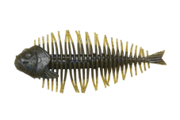
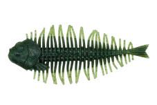
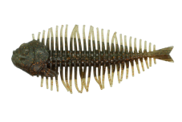
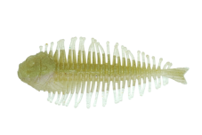

ギーラカンス4インチ
（GEELACANTH 4inch）
ギーラカンス4インチ（GEELACANTH 4inch）はDSTYLE（ディスタイル）のエラストマーワームです。
『究極のデロピニスト！！』。主なターゲットはブラックバスです。
ビッグバスの本能を刺激するエスケープギルアクションを出す、青木唯さんプロデュース第3弾。エラストマー素材の「DURAVITY（デュラビティ）」シリーズだからこそ出せる、ライブ感のあるアクションが特徴です。

画像出典:DSTYLE公式HP
スペック
- メーカー
- DSTYLE（ディスタイル）
- タイプ
- エラストマーワーム（DURAVITYシリーズ）
- 全長
- 4インチ
- 重量
- 約10g
- 入数
- 3本
- 対応リグ
- ウェイテッドノーシンカー・ネコリグ・テキサス・ダウンショット・リーダーレスダウンショット・フリーリグ・キャロ・ジグトレーラー
- プロデュース
- 青木唯
- 価格
- 1,485円（税込）
▼今すぐチェック
ギーラカンス4インチの特徴
エラストマー素材が織りなす、究極のデロンデロンアクション
-
エラストマーならではの動き
通常のワーム素材では出せない、切れのあるデロンデロンアクション。DURAVITYシリーズだからこそ出せるライブ感。
-
リアルなギルフェイスとハイブリッドボディ
メインボディはリアルなギルフェイスに、芯となるボディとリブのハイブリッド。リブの先端には、わずかな水流でピリピリ動く触覚パーツが付いている。
-
VIROLAテールと「への字」リブ
テールはVIROLAテールを採用し、激しく動かせばパワフルに、ゆっくり動かせばピリピリ動く。への字のリブで側面の水噛みを強め、パワフルなローリングを出す。
ギーラカンス4インチの使い方
ウェイテッドノーシンカー、ネコリグ、テキサス、ダウンショット、フリーリグ、キャロ、ジグのトレーラーまで、幅広いリグに対応します。
ノーシンカーでも、あごの下にシンカーを付ければボディを縦にして泳がせられます。まずはノーシンカーやテキサスで、デロンデロンとした動きを試してみましょう。
ギーラカンス4インチの得意な状況
ブルーギルを食べている大型のバスを狙う時が得意です。
逃げ惑うギルのような動きで、ビッグバスの本能を刺激します。
ワンポイント
エラストマー素材なので、通常のワームと一緒に保管すると溶ける原因になります。別のケースに分けて保管しましょう。
オススメカラー
ギーラカンス4インチは全14色。そのうち4色を紹介します（画像は公式のカラーチャートより）。

グリーンパンプキン・ブルーフレーク＆ペッパーまず1つ選ぶならこの色。どこでも使いやすい定番。

ベビーフェイスギルブルーギルを食べている時に。

ヤマエビ ver2エビを食べている時に。

本ワカサギワカサギのいる湖に。
画像出典:DSTYLE公式HP
ギーラカンス4インチに似ているルアー
-
 ヴィローラ4インチ
DSTYLE
詳細はこちら＞
ヴィローラ4インチ
DSTYLE
詳細はこちら＞
ギーラカンスのテールの元になったDSTYLEのリアル系ワーム。
-
 トルキーストレート4.8インチ
DSTYLE
詳細はこちら＞
トルキーストレート4.8インチ
DSTYLE
詳細はこちら＞
同じDSTYLEのストレートワーム。
-
 ゴリドラス
ジャッカル
詳細はこちら＞
ゴリドラス
ジャッカル
詳細はこちら＞
ボトムを擦って誘うスイムベイト。